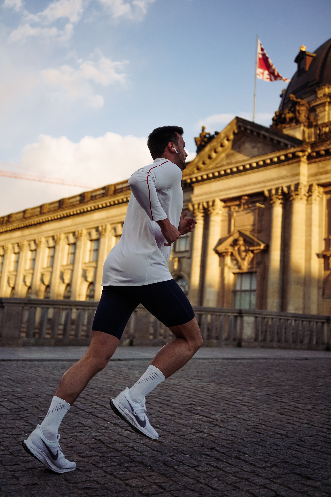

Running - A Healthy Lifestyle
By - Saikiran (10/02/2020)
Everyone knows that running is a great way to get into shape, but it also can benefit almost every part of your body and lift your mood. Whether it's your favorite part of the day or something, you have to push yourself through, the benefits are undeniable. Let me just get into more depth here, can I?!

Running is a method of terrestrial locomotion allowing humans and other animals to move rapidly on foot. Running is a type of gait characterized by an aerial phase in which all feet are above the ground (though there are exceptions). This is in contrast to walking, where one foot is always in contact with the ground, the legs are kept mostly straight and the center of gravity vaults over the stance leg or legs in an inverted pendulum fashion. A feature of a running body from the viewpoint of spring-mass mechanics is that changes in kinetic and potential energy within a stride occur simultaneously, with energy storage accomplished by springy tendons and passive muscle elasticity. The term running can refer to any of a variety of speeds ranging from jogging to sprinting.
Running in humans is associated with improved health and life expectancy.
Now, let's get to the science part of it.
Good Running Techniques
Upright posture and a slight forward lean
Leaning forward places a runner's center of mass on the front part of the foot, which avoids landing on the heel and facilitates the use of the spring mechanism of the foot. It also makes it easier for the runner to avoid landing the foot in front of the center of mass and the resultant braking effect. While upright posture is essential, a runner should maintain a relaxed frame and use their core to keep posture upright and stable. This helps prevent injury as long as the body is neither rigid nor tense. The most common running mistakes are tilting the chin up and scrunching shoulders.
Stride rate and types
Exercise physiologists have found that the stride rates are extremely consistent across professional runners, between 185 and 200 steps per minute. The main difference between long- and short-distance runners is the length of stride rather than the rate of stride.
During running, the speed at which the runner moves may be calculated by multiplying the cadence (steps per second) by the stride length. Running is often measured in terms of pace in minutes per mile or kilometer. Different types of stride are necessary for different types of running. When sprinting, runners stay on their toes bringing their legs up, using shorter and faster strides. Long distance runners tend to have more relaxed strides that vary.